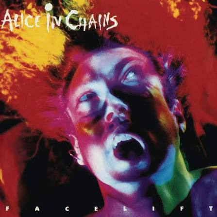
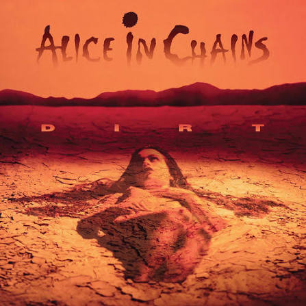

Facelift · Dirt · Jar of Flies
Teste o quanto você conhece as músicas de três trabalhos do Alice in Chains. Escolha um álbum abaixo (o site muda de cara!), jogue o quiz nos níveis fácil, médio ou difícil e veja o seu desempenho no dashboard.

Facelift · 1990
Dirt · 1992 Jar of Flies · 1994
Jar of Flies · 1994